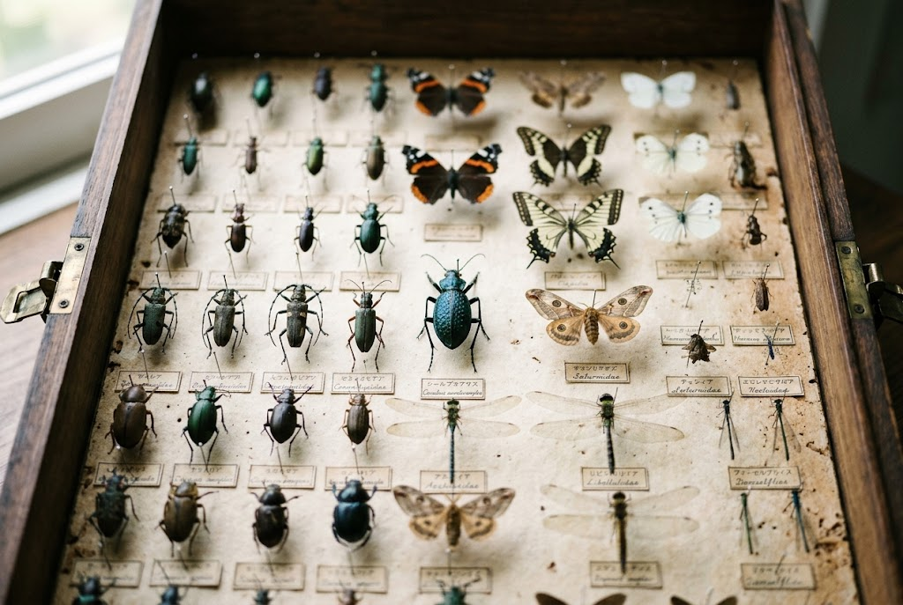
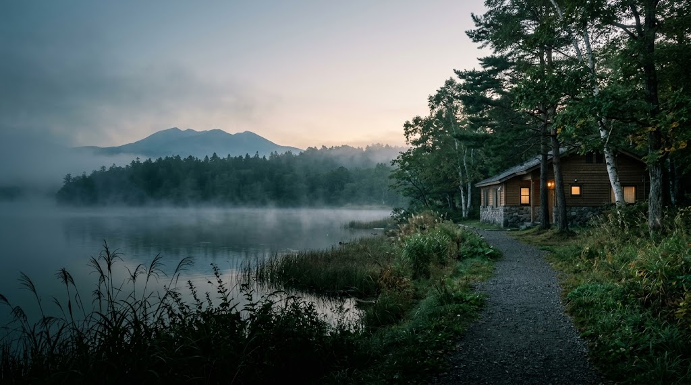
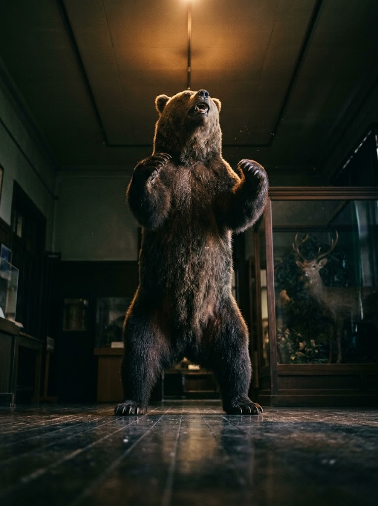

約3,000点の昆虫標本
「飯島コレクション」
ひとつひとつ丁寧に整えられた、約3,000点の昆虫標本。形や色の違いをじっくり見比べるうちに、標茶の森と湿原の豊かさが見えてきます。

「ニタイ・ト」は、北海道川上郡標茶町にある町立博物館です。2018年7月、郷土館から現在の施設へ移転し、リニューアルオープンしました。
標茶町の自然や歴史、なかでもアイヌ文化と開拓時代の資料展示に力を入れています。塘路湖畔の自然環境の中で、地域の文化と自然を学べる場として設計されました。
昆虫標本から大型獣の剥製、湿原の鳥まで。標茶町の自然を間近に感じられる展示がそろっています。

ひとつひとつ丁寧に整えられた、約3,000点の昆虫標本。形や色の違いをじっくり見比べるうちに、標茶の森と湿原の豊かさが見えてきます。

ヒグマ、エゾシカ、シマフクロウなど、北海道の大地に生きる動物たちの剥製を展示しています。実物大の迫力は、写真や映像では味わえません。
釧路湿原に生息する鳥類のジオラマを楽しめる、屋内バードウォッチングコーナーがあります。天候を気にせず、野鳥の姿をゆっくり眺められます。
約3,000点の昆虫標本や動植物標本に加え、古代から近代までの暮らしを伝える資料を多数展示しています。
2023年に捕獲された世間を賑わせたヒグマOSO18に関する資料などが展示されております。一階は無料、2階は有料エリアになります。
建物の見た目はこじんまりとしていますが、観覧料220円とは思えないほど充実した資料の数々を見ることができます。縄文土器からアイヌ民族の道具類、近年話題となったoso18の展示などズラリ。スタッフさんに聞いたところ、熊や鹿などの動物はほとんど剥製とのこと。特に熊の剥製は目の前に立つと威圧感満載です。とても雰囲気のいい資料館です。